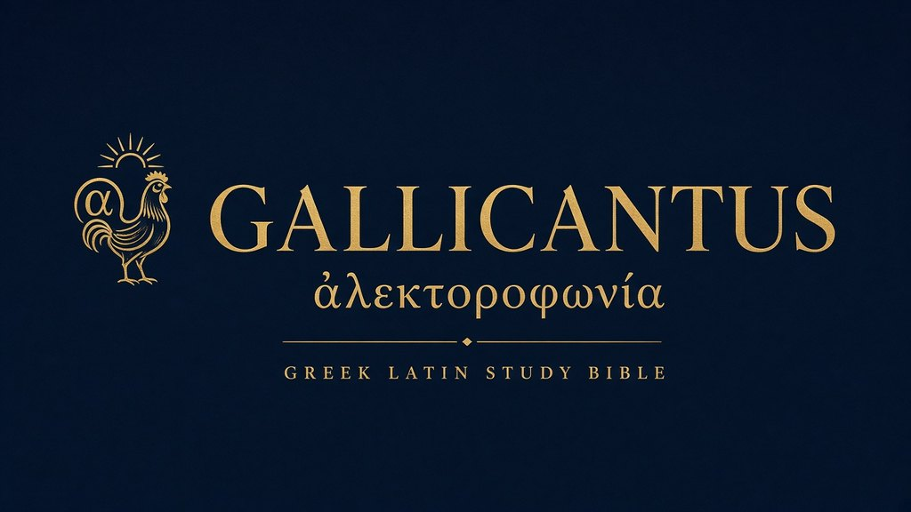

About GallicantusGreek-Latin Study Bible
A Greek and Latin study Bible with an interactive beginner Greek workbook. Tap any Greek or Latin word for its dictionary form, plain meaning, grammar, and forms, with English translations alongside the text.
What is in Gallicantus
- Old Testament (Septuagint & Apocrypha): Brenton’s Greek Septuagint (1851) with Brenton’s English. Includes Tobit, Judith, 1–4 Maccabees, Wisdom, Sirach, Baruch, Epistle of Jeremiah, Susanna, Bel and the Dragon, 1 Esdras, Prayer of Manasseh (Odes 12), the Greek additions to Esther and Daniel, and Psalm 151.
- New Testament: NA28 Greek (via STEPBible TAGNT) with the World English Bible.
- Latin Vulgate: Clementine Vulgate (plus 3 Esdras, 4 Esdras, and the Prayer of Manasseh from Hetzenauer’s 1914 appendix) with Douay-Rheims (1899) and King James Version English.
- Workbook (Reading John): 50 inductive beginner Greek lessons through the Gospel of John, with reading passages, grammar rules, vocabulary, charts, and practice exercises.
- Daily Verses & Bookmarks: Five daily verses (in Greek, English, and Latin) and local verse bookmarks.
How to use
- Tap any word to open its study card with dictionary form, meaning, grammar, forms table, and cross-references.
- Reading modes: Switch between Greek, Greek + English, Latin, Latin + English, and Latin + Greek.
- Navigation: ☰ opens the book list and Workbook. ‹ › move between chapters. ◐ toggles dark and light mode, Aa changes text size, and ⌕ searches Greek, Latin, or English. Press and hold a verse to bookmark it.
- Psalms numbering: Psalms follow Greek (LXX) / Vulgate numbering (e.g., Psalm 22 = Hebrew/English Psalm 23).
- Offline use: Chapters you read are saved automatically. To save the entire Bible and Workbook offline, open ☰ → Settings → Download everything. No account, no tracking.
Credits & licences
English translations are aligned to the Greek and Latin texts shown. Dictionary forms, grammar tags, and word alignments are generated from the open lexicons and tools listed below and reviewed in batches.
- Greek Old Testament & English: L. C. L. Brenton, The Septuagint Version of the Old Testament (1851), public domain (eBible.org); LXX2012 by Michael Paul Johnson (2012), public domain (eBible.org).
- Greek New Testament: STEPBible TAGNT (Tyndale House, Cambridge), CC BY 4.0, following NA28 wording.
- New Testament English: World English Bible (eBible.org), public domain. “World English Bible” is a trademark of eBible.org.
- Latin Vulgate & English: Clementine Vulgate (
latVUC) and Douay-Rheims 1899 (engDRA), public domain (eBible.org); 3 Esdras, 4 Esdras, and Prayer of Manasseh from Hetzenauer (1914, public domain) with the King James Version (1611). - Greek Dictionaries & Analysis: Dodson Greek-English Lexicon (CC0 / public domain); STEPBible TBESG (Abbott-Smith / Middle Liddell) and TFLSJ (LSJ), Tyndale House, CC BY 4.0; Morpheus (Perseus Project, MPL 2.0, build-time).
- Latin Dictionaries & Analysis: Lewis & Short (Perseus Digital Library, CC BY-SA 4.0); Whitaker’s Words (William A. Whitaker); LatinCy (MIT, build-time).
- Wiktionary Layer (CC BY-SA 4.0): Wiktionary via kaikki.org (Wiktextract), used for etymologies, descendants, and supplementary dictionary forms (
data/etym/,data/desc/,data/ldesc/,data/wk/). - Workbook Sources: Unit 1 follows William Rainey Harper and Revere Franklin Weidner, An Introductory New Testament Greek Method (1889; 1916 ed., public domain). Unit 2 follows F. C. Conybeare and St. George Stock, Selections from the Septuagint (1905, public domain).
- Font: Gentium Plus, SIL International, SIL Open Font License 1.1.
- Project Licence: Code under the MIT License; original project content under CC BY-SA 4.0 (Static Rooster Media). Source layers keep their own licences (see LICENSE and NOTICE).
Report an issue (GitHub Issues).